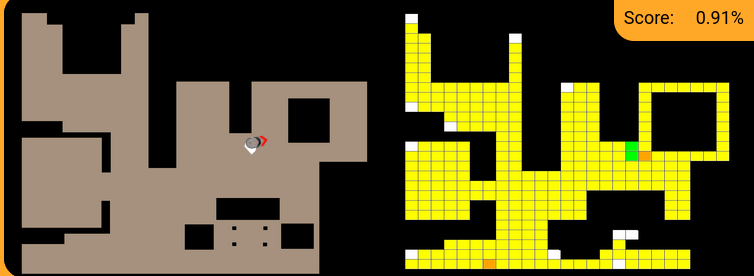
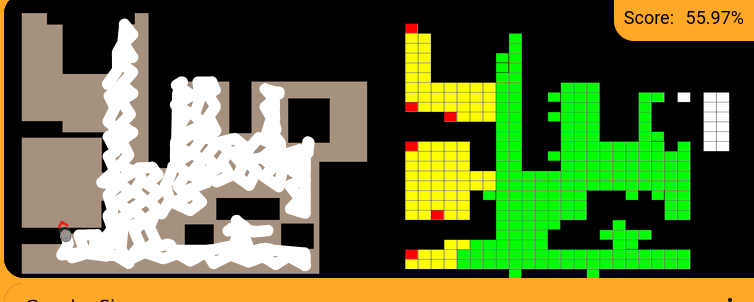

Introduction
For the initial practical assignment of this course, we are required to implement a BSA (Backtracking Spiral Algorithm) for a vacuum-cleaning robot that uses self-localization. To accomplish this, we are provided with a pixel-based map representing the obstacles within a house, and the objective is to cover as much of the available area as possible in order to achieve an efficient and thorough cleaning of the entire surface. In addition, the corresponding theoretical background and guidelines for implementing the algorithm are provided.
01. Theorical Concepts
The system combines localization, navigation, perception and motion control to allow the robot to operate autonomously. To create the algorithm solution we needed the next theorical concepts:
Conversion between different representations
The conversion between different types of variables is essential in this practical assignment, as the algorithm is fundamentally based on it. It is necessary to understand the conversion between 3D and 2D, or, more specifically, the conversion of the robot’s real-world coordinates in Gazebo into specific pixels on the provided map, and vice versa. In this process, we must take into account the transformations applied to these points and use a common transformation that accurately calibrates these conversions. Additionally, it is necessary to establish a relationship or conversion between pixels and cells, since the map must also be divided into a grid of cells.
Coverage and decomposition, and traveling between segments
On the other hand, when developing the algorithm, we need to determine the different possible paths and decide which one to follow based on the specific requirements of the algorithm. In order to move the robot, the recommended approach is to look two cells ahead, assuming that there are no obstacles between the robot and that position.
Visibility error
Due to the risk of the robot colliding with obstacles when moving too close to them, it is necessary to take additional safety measures during path planning. One of the most effective solutions is to apply an erosion process to the map, increasing the size of the obstacles virtually. This creates a safety margin around the obstacles and prevents the robot from planning paths that would bring it too close to them. In this way, the algorithm can generate safer and more reliable trajectories, reducing the possibility of collisions while still allowing the robot to cover as much of the available area as possible.
03. My Algorithm
The program implements a map-based coverage algorithm for a vacuum-cleaning robot. It uses a grid representation of the environment and a Backtracking Spiral Algorithm (BSA) to generate a path that covers the accessible cells of the map. Once the path has been generated, the robot follows it using its linear and angular velocity controls.
1. Map processing The map is first loaded and converted into a grayscale image. I have to manually expand left wall (I will explain it in the problems section). Then, I eroded the map by the next lines: kernel = np.ones((5,5), np.uint8) house_map = cv2.erode(house_map, kernel, iterations=1) Erosion increases the size of obstacles and therefore provides a safety margin between the robot and the walls. For next, I divided the map into a grid of 35 × 35 pixel cells (because is the vacuum size, said in the theory page of the practice). For each cell, the percentage of obstacle pixels is calculated. If at least 1% of the cell contains obstacles, the whole cell is considered occupied. This discretization simplifies the planning process because the BSA operates on grid cells instead of individual pixels.
2. Coordinate transformation The program uses five corresponding points between Gazebo coordinates and pixel coordinates. These points are used to calculate a transformation matrix using a least-squares method. Two transformations are obtained: GZ_TO_PX_T: converts Gazebo coordinates into pixel coordinates. PX_TO_GZ_T: converts pixel coordinates into Gazebo coordinates. The gz_to_cell() function converts a Gazebo position into a grid cell, while cell_to_gz() performs the inverse operation.
3. Cell evaluation and visualization The is_cell_free() function determines whether a cell can be traversed (it checks that the vealue of the cell is zero or no). The color_cell() function is used to paint one cell in the map, by giving the row, the column and the color.
4. Backtracking Spiral Algorithm The planning algorithm is implemented in the bsa() function. The algorithm maintains several data structures: visited: stores the cells that have already been explored. path: stores the final sequence of cells that the robot should follow. all_map_cells: acts as a stack for the current exploration. return_points: stores alternative branches that can be explored later. The robot explores the map using four possible directions: directions = [(-1, 0), (0, 1), (1, 0), (0, -1)] The algorithm first moves to an unvisited free neighboring cell. When several possible neighbors are available, the additional alternatives are stored as return points. When the robot reaches a cell with no available unvisited neighbors, the algorithm performs backtracking. It returns through previously explored cells until it reaches a stored return point, and then continues the exploration from there. This allows the algorithm to cover different branches of the environment while avoiding already visited cells.
5. Vacuum navigation Once the path has been generated, the vacuum starts following it. For each target cell, its corresponding Gazebo coordinates are calculated.I use the Euclidean distance between the robot and the target to know when vacuum reaches the target. When the robot is closer than 0.20 meters to the target, the program considers the cell reached and moves to the next target. Otherwise, the program calculates the angle between the robot and the target. If the angular error is large, the robot rotates in place. Once the robot is sufficiently aligned with the target, it moves forward.
04. Dificulties or Problems Encountered During Development
In this section, I will explain the problems I encountered during the development of this practice, as well as some issues that I was not able to completely solve.
- The first problem was the calibration of the transformation matrix and the coordinate transformations. It took me a lot of time to understand what I was supposed to do based on the theory. Once I understood that I had to calculate the transformation matrix myself using manually measured points, I also found the implementation quite difficult. After implementing it and making further progress with the code, I noticed another problem: when I started the navigation, the map showed the robot in different cells from where it was actually located. As a solution, I had to manually add two values to the rows and columns so that the measurements were correctly calibrated. These adjustments can be seen directly in the code.
- The second problem was the color-coding system. While developing the algorithm, I did not fully understand how the different colors had to be associated with each type of cell. After making several changes, I was able to clarify how the system worked, although there are still some cells that remain uncolored.

- The third problem was the left wall of the map and the shelf at the bottom. Once I had the algorithm working and the robot was navigating, when it reached these two areas, the robot tried to move towards a region outside the map, as shown in the image. Therefore, I had to manually extend the walls slightly so that the robot could complete the path correctly. Although we were provided with a new map because the one from Unibotics was misaligned, I preferred to use this one for convenience.

- Finally, there are two areas of the map, which can be seen in the video, where the robot gets slightly stuck. The first one is in a corner on the right side of the map. After a few minutes, the robot is able to get unstuck by itself. However, in the entrance to the room on the left, the robot is unable to get out by itself, so I have to move it manually a little. Before recording the video, however, the robot was also able to get unstuck from this area by itself.
05. Video of the algorithm
Finally, this is the video of the program. It is worth noting that the video is in fast motion. Additionally, the two areas discussed in the “Problems” section have been cut a little out to reduce the length of the video, as the original video was approximately 30 minutes long.
▶ Watch the algorithm video